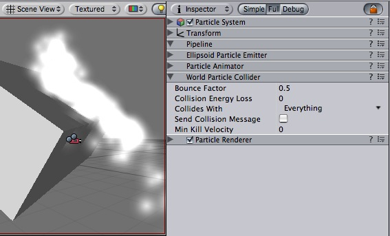

Previous
Previous
The Particle Collider is used to collide particles against other objects in the scene.
|  |
A shot of a very simple particle system with particle collider colliding with a cube
Properties
| Property: | Function: |
|---|---|
| Particles can be accelerated or slowed down when they collide against other objects. This factor is similar to the Particle Animator's damping. | |
| Amount of energy (in seconds) a particle should lose when colliding. If the energy goes below 0, the particle is killed | |
| If a particle's velocity drops below Min Kill Velocity because of a Collision, it will be eliminated. | |
| Which layers the particles collides against. | |
| When colliding every particle sends out a message that you can catch through scripting. |
Details
To create a particle system with particle collider:
- Create a particle system using GameObject -> Create Other -> Particle System
- Add the particle collider using Component -> Particles -> World Particle Collider
Messaging
If Send Collision Message is enabled, any particles that are in a collision will send the message OnParticleCollision to both the particle's GameObject and the GameObject the particle collided with.
Hints
- Send Collision message can be used to simulate bullets and apply damage on impact.
- Particle Collision Detection is slow when used with a lot of particles. Use Particle Collision Detection wisely.
- Message sending introduces a large overhead and shouldn't be used for normal particle systems.